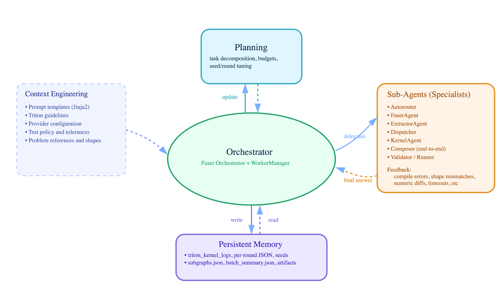
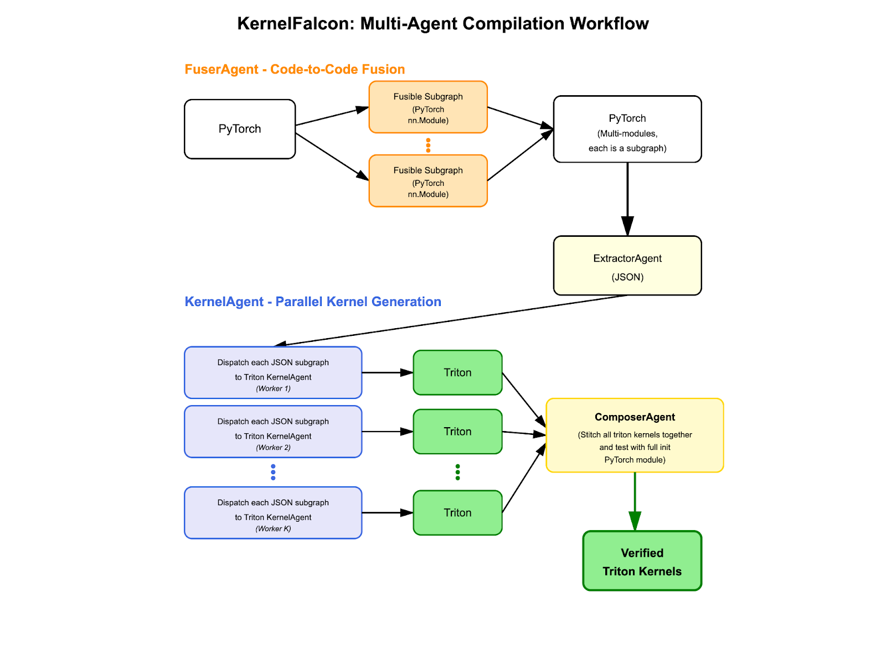
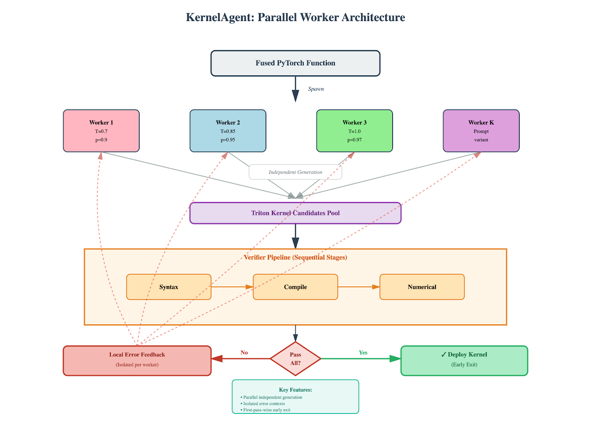

手写GPU内核是部署机器学习模型的长期瓶颈。KernelFalcon用Deep Agent架构自动合成保留PyTorch语义的Triton内核:分层任务分解、确定性编排、并行搜索首胜即停、落地工具验证。
下文完整呈现其四阶段流水线、Deep Agent五原则,以及在KernelBench上100%正确率的验证方法。
手写优化GPU内核仍是部署机器学习模型的瓶颈。团队很少有精力为每种形状、dtype和硬件代际手工调优算子。模型演进让问题更严重:ResNet上有效的模式,无法直接搬到Mamba的选择性状态空间或MoE的条件路由上。
现代编译器确有实质进展,但长尾依然难啃。TorchInductor覆盖常见模式,TVM自动调度稠密内核,XLA专攻动态形状。但非常规算子、动态控制流和异构融合模式仍逃不过次优编译。今年早些时候NVIDIA用DeepSeek-R1+推理时扩展在KernelBench L1/L2上取得强劲结果,证明带验证循环的LLM方法可以匹敌甚至超越传统方法，但止步于L3级完整模型架构。
能否自动合成保留PyTorch语义、逼近手工调优性能的Triton内核，而不必扩充规则库或雇更多GPU专家?
KernelFalcon应运而生:代码到代码的系统,保留PyTorch语义,生成优化Triton内核。不搞单次生成,而是并行探索+基于执行的验证，交付真正在GPU上跑起来、数值与原模型一致的内核。
传统静态图编译器依赖IR变换和逐模式调度。追踪常把控制流冻结成单一路经,动态形状也吃力。KernelFalcon走另一条路:
保留Python语义。坚持PyTorch代码到代码,if/else、while、数据相关路由和动态形状全部合法。
验证器优先的循环。KernelAgent编译并测试候选内核;失败在本地回流;首个数值正确的内核出现即提前退出。
端到端组合验证。融合内核直接替换原算子,验收前再做整模型等价性校验。
底层是deep agent架构，为降低LLM失败模式而设计的多阶段系统,把问题结构化:
显式任务分解:把模糊目标变成精确、工具就绪的子问题。
确定性编排:控制逻辑写在Python里,LLM只负责认知。
带提前停止的并行搜索:高效探索多样解。
落地的工具使用:每一步都用真实编译器与硬件验证。
结构化状态:提示词、日志与产物持久化,可审计、可续跑。
这不只是更干净的实现,而是不同的范式。不再问“LLM能不能解?”,而是问“如何组织任务,让LLM大概率成功?”结果:覆盖更广、性能更真实，不膨胀规则集,不牺牲语义。
该架构体现了deep agent原则:

1. 分层委派:Orchestrator把融合模型这类高层任务,分解为抽子图、生成内核、组合结果等精确子问题,分派给专家智能体。
2. 确定性控制:规划与编排逻辑是显式Python代码,不是LLM驱动，worker生命周期、超时与成功条件全部程序化。
3. 落地执行:每个智能体都用Triton编译器、PyTorch参考实现、GPU执行等真实工具验证,而非模拟或LLM评判。
4. 持久状态:全部中间结果、提示词、日志与产物落盘,可审计、可调试、可跨会话续跑。
5. 结构约束:上下文工程把规则编码为模板与策略,让正确性要求在结构上强制成立,而非依赖提示词。

流水线实现四个不同阶段:
1. FuserAgent，保留Python语义的代码到代码融合。
2. ExtractorAgent，形状推断与契约生成。
3. Dispatcher + KernelAgent，协调并行Triton内核合成与验证。
4. ComposerAgent，端到端集成与验证。
传统编译器在融合分析时把PyTorch降为静态IR,丢失让调试变难的信息,动态控制流直接崩。FuserAgent直接操作PyTorch源码。orchestrator管理融合工作流,产出边界清晰的干净PyTorch模块。
输入:任意复杂度的原始PyTorch模型。
class Model(nn.Module):
def forward(self, x):
if x.sum() > 0:
x = self.conv(x)
x = self.bn(x)
x = torch.tanh(x)
x = F.max_pool2d(x, 2)
return self.norm(x)流程:
1. 解析与分析:抽取算子序列、数据依赖与控制流边界。
2. 识别融合机会:找出可融合且保持语义的算子组。
3. 生成融合模块:创建带显式测试的干净PyTorch函数。
4. 增量验证:每个融合子图独立测试后再往下走。
输出:带子图函数的融合PyTorch模块。
# Fused module with control flow preserved
class FusedModel(nn.Module):
def __init__(self, channels: int):
super().__init__()
self.branch = ConvBnTanhMaxPool(channels=channels)
self.norm = ChannelwiseNorm(channels=channels)
def forward(self, x: torch.Tensor) -> torch.Tensor:
if x.sum() > 0: # Control flow intact
x = self.branch(x)
return self.norm(x)为什么有效:orchestrator产出精确规约,下游阶段可直接执行。像if x.sum() > 0这样的控制流留在Python里，从不试图编译掉。
停留在Python源码层,保留变量名、注释与完整控制流上下文。多数传统编译器式融合器默认在优化静态数据流图,动态Python侧控制流要么被压扁,要么融合前必须重写:
提示词驱动的方法保留Python if,只在分支内插入融合子模块;传统编译器式融合要么在追踪时特化到单分支,要么手工编码控制流成本巨大。TorchScript降为SSA形态时,精心命名的hidden_states变成t0;torch.fx追踪穿过条件分支,未走的分支直接消失。即便TorchDynamo/torch.compile靠图断裂与guard更好地处理控制流,仍为观测到的路径特化图，其中if x.sum() > 0变成guard检查,要么复用缓存图,要么触发重编译。FuserAgent不同:保留Python if语句,只融合分支内的算子。既拿到内核融合收益,分支内算子变成优化过的Triton内核,控制流本身仍是可读Python。
这对遍地开花的现代ML模式至关重要:TreeLSTM在解析树上递归、早退网络自信即退出、MoE路由到不同子网络。更关键的是调试翻车时，内核吐NaN或融合失败，想读的是Python,不是IR。想看到系统到底试图融合了什么,读当初写下的Python代码。
Deep agent原则:确定性控制平面
全部编排，worker生命周期、超时、产物路径、成功即提前退出，都用Python实现。LLM只生成候选代码与元数据,比如融合模块、子图JSON、Triton内核、组合内核;控制器执行并验证输出,不是LLM。
工作流:
Orchestrator按类型化WorkerConfig生成N个worker,流式收日志,在队列上等首个胜者,取消其余,打包产物。
Worker迭代:渲染提示词→流式LLM→抽Python代码块→按SHA去重→执行候选→PASS则宣告胜出;否则存错误重试。
无需手动AST解析或基于规则的融合检测，LLM经提示词直接给出融合代码,Python靠执行验证。
参考:Fuser/orchestrator.py、Fuser/worker.py、Fuser/runner.py、Fuser/prompting.py
extractor用LLM分析融合代码,识别精确子图边界与形状契约。
输入:Stage 1产出的融合PyTorch模块。
提取流程:
1. 跑orchestrator:先拿到Stage 1的融合代码。
2. 提示LLM:识别不同子图函数,推断形状,编目算子。
3. 生成JSON规约:LLM产出带算子序列、形状与权重元数据的类型化规约。
4. 去重合并:按算子、形状、权重构成的稳定签名分组子图,聚合计数。
输出:子图规约的JSON数组。
[
{
"id": "sg_conv_bn_tanh_pool_1",
"type": "Conv2d_BN_Tanh_MaxPool",
"data_layout": "NCHW",
"dtype": "float32",
"ops": [
{"op": "conv2d", "kernel_size": [3, 3], "stride": [1, 1], "padding": [1, 1], "dilation": [1, 1], "groups": 1, "bias": false},
{"op": "batch_norm", "eps": 1e-5, "momentum": 0.1},
{"op": "tanh"},
{"op": "max_pool2d", "kernel_size": [2, 2], "stride": [2, 2]}
],
"input_shape": ["B", "C_in", "H", "W"],
"output_shape": ["B", "C_out", "H_out", "W_out"],
"weights_original": {
"conv.weight": ["C_out", "C_in", 3, 3],
"batch_norm.weight": ["C_out"],
"batch_norm.bias": ["C_out"],
"running_mean": ["C_out"],
"running_var": ["C_out"]
},
"weights_fused": null,
"count": 1,
"where": "Model.forward conditional branch",
"source": {
"module": "FusedConvBnTanhPool",
"code": "def forward(self, x):\n x = F.conv2d(x, self.conv_w, stride=1, padding=1)\n x = F.batch_norm(x, self.bn_rm, self.bn_rv, self.bn_w, self.bn_b, training=False, eps=self.eps)\n x = torch.tanh(x)\n return F.max_pool2d(x, 2)"
}
}
]这段JSON成为KernelAgent的契约，显式、类型化、可验证。每个子图包含:
带算子专属参数的算子序列。
输入输出形状契约。
跟踪融合前后参数的权重元数据。
位置信息,即在模型的哪里、对应哪个源码模块。
去重子图的计数。
orchestrator控制工作流;LLM生成形状感知的元数据;去重处理模型中相同的模式。
参考:Fuser/subgraph_extractor.py
Dispatcher为每个子图规约协调并行Triton内核生成。每个子图创建一个全新的TritonKernelAgent,配worker池,默认4个worker。

并行方法:
同一提示词配0.8、0.9、1.0等不同温度,生成N个内核种子。启动N个worker,默认4个,各自在独立工作目录跑隔离精炼循环。温度不同,worker探索的优化策略不同，有的保守,有的激进。
关键机制:
1. 局部错误反馈避免上下文污染
每个worker维护自己的工作目录与逐轮历史。Worker 2遇到编译错误,只有Worker 2的下一次迭代看得到，错误上下文留在本地。worker把kernel.py和test_kernel.py写进各自workdir,用子进程跑测试,独立跟踪结果。其他worker保持干净上下文继续。
2. 提前终止节省算力
中心化manager监控结果队列等完成事件。任一worker报告成功,即测试子进程退出码为0,manager即置共享成功事件,通知所有worker停工,随后join/终止。首个通过全部验证阶段的内核胜出,其余worker立即终止。
Deep agent原则:落地的工具使用
worker在隔离子进程中执行真实Python/Triton代码。每个worker既生成Triton内核实现,也生成验证harness,再以独立子进程跑验证。测试harness首次调用内核时,Triton的JIT编译器自动把内核编译为PTX，编译隐式发生在测试执行中,语法或编译错误都表现为测试失败的非零退出码。
验证harness把内核输出与PyTorch参考实现对比。成功=子进程退出码0;失败则捕获stderr进入下一轮精炼。框架不评判正确性，只执行代码、报告发生了什么。这种对真实执行的落地,消除了“模拟评判”问题:LLM再也不会幻觉出“坏代码能跑”。
参考:Fuser/dispatch_kernel_agent.py、triton_kernel_agent/manager.py、triton_kernel_agent/worker.py、triton_kernel_agent/agent.py
composer用LLM把验证过的Triton内核整合成完整、可测试的模块。
输入:Stage 3的验证Triton内核集合、subgraphs.json与原始问题。
组合流程:
1. 提示LLM:给原始问题代码、精简子图摘要与成功内核文件。
2. 生成集成:LLM按要求结构合成端到端Triton实现。
3. 可选验证:执行组合内核,用PASS/哨兵检测验证。
4. 打包产物:把组合实现与验证元数据写进输出目录。
生成的结构:
LLM产出完整Python模块,包含:
一个或多个Triton内核:每个用triton.jit装饰,实现融合算子。例如一个内核处理conv-bn-tanh-pool融合,另一个处理归一化。
顶层包装函数:命名为kernel_function(...),签名匹配原模型输入。包装函数分配输出张量、配置grid维度、按序启动Triton内核,编排数据流。
自测harness:测试函数设定随机数种子,构造原始PyTorch参考实现,调用组合内核函数,用torch.allclose按提示词给定的容差校验等价。这些按dtype区分的容差计入了各精度固有的舍入误差累积,与PyTorch内部测试标准一致。成功则打印“PASS”并以退出码0退出。
验证流程:
composer确保单个正确的内核组合起来也正确，验证整体等于部分之和。Python把组合模块当子进程执行,检查stdout里有“PASS”且退出码为0。这种验证落地于真实执行,而非模拟或LLM评判的正确性。
输出产物:
成功时记录验证状态、耗时与产物路径。完整组合模块成为最终交付物,可直接部署或继续深挖。
参考:Fuser/compose_end_to_end.py
核心洞见:刚性契约解锁自主运行。当每个交互点都有类型化接口，算子类型、形状、dtype、期望输出，系统无需人工监督就能跑。歧义杀死自动化。
这些契约无处不在。子图规约从extractor流向dispatcher再到各kernel agent,每一步都知道下一步要什么。关键Triton约束直接写进模板,而不是指望LLM记住。正确性从“希望提示词管用”变成“结构上不可能违反”。
组合这些契约时魔法发生了:单个内核通过测试还不够,还得和其他内核正确组合。最终验证不只是“这个内核能跑吗?”,而是“整条流水线输出与原始PyTorch一致吗?”正是这种端到端契约让系统可信。
每次尝试都落盘以便调试。保留日志、提示词、生成代码、错误trace与耗时数据。每个worker写逐轮快照,记录本地演化;orchestrator实时流式事件。要一夜跑完250个任务并讲清每个任务发生了什么,这种健壮日志是刚需。
更重要的是,持久化让调试成为可能。失败尝试不丢弃，工程师可以grep日志找模式、调系统。目前学习还是手动的,靠分析日志、更新提示词,而非自动;路线图包括未来对成功模式的检索复用。
生产系统需要边界。每个worker跑在自己目录,子进程隔离执行测试,错误上下文本地维护。Worker 2编译报错,错误只留在Worker 2的精炼循环里。Worker 0、1、3带着干净上下文继续探索。
隔离不止于错误处理。资源上限防止进程失控,超时捕获死循环,清理钩子保证不泄漏GPU显存。这些不是事后补的特性，是系统能规模化工作的根基。
隔离的美妙在于让调试可处理:出问题时,精确知道哪个worker、哪一轮、哪个提示词导致了失败。错误不经共享状态级联,不污染其他尝试。可以精确重放那段序列,搞懂哪里错了。
系统产出大量数据，提示词、代码、错误、耗时。诀窍是让数据有用而不被淹没。用JSONL流式、JSON快照这类结构化日志,人可读、机器可解析。
可以grep特定事件、聚合错误类型、追踪单个worker的旅程,或按温度设置统计成功率。日志在讲故事:系统如何探索解空间,什么有效、什么无效、为什么。
批量摘要给三万英尺视角，通过率、平均轮数、worker利用率;详细日志在需要时给显微镜。分层可观测意味着:先快速判断整体健康,再钻进具体失败,不迷失在噪声里。
精炼不是泛泛的“再试一次”提示词。worker测试失败时,真实错误输出，编译信息、数值mismatch、超时指示，成为下一轮提示词的一部分。这种结构化反馈把LLM引向具体修复,而非随机探索。
框架不抽象评判正确性。跑代码、捕获发生了什么、把现实喂回去。张量设备相关的编译错误和输出数值mismatch,处理方式不同。worker维护本地历史,每次精炼都站在前次肩上,在各自上下文里形成学习轨迹。
关键是反馈具体可执行。不说“内核不行”,而是“第23行编译失败:张量维度不匹配”。不说“输出错了”,而是“最大误差0.0023,位置[15,7]”。这种精确度把调试从猜谜变成靶向修复。
成功标准很简单:生成的代码真能跑吗?任务通过=Triton内核编译通过、运行不崩、输出在有界容差内与PyTorch数值等价。
加速比、延迟等性能指标将在后续文章中覆盖。本文先确立正确性。
| 层级 | 任务数 | 描述 | 覆盖率 |
|---|---|---|---|
| L1 | 100 | 单算子 | ✅ 100% |
| L2 | 100 | 融合模式 | ✅ 100% |
| L3 | 50 | 完整架构 | ✅ 100% |
无模拟。没有“LLM觉得能跑”。执行真实代码。
两级验证:
每个worker把Triton内核和测试harness都写盘,再在全新工作目录的子进程里跑测试。单个内核,退出码0即成功;整条流水线,需要退出码0且输出含“PASS”。测试失败就捕获stderr再试。测试按dtype取合适容差与PyTorch对比，fp32更紧,fp16更松。
什么在防作弊?
执行主要靠Triton编译器:triton.jit函数里不能含PyTorch算子,写了就编译失败。这堵住了在内核里调高级API的路。包装侧也加了检查。测试侧依赖随机输入与子进程执行。但LLM生成的测试harness本身是被信任的，不做静态作弊分析。
组合验证很关键:单个内核正确不保证整条流水线正确。集成会暴露形状mismatch、误差累积与语义误解,这些是单测抓不到的。
验证胜过单次生成,但架构才是乘数。这个系统把可执行反馈接进每个阶段,让首个通过的路径结束搜索。多worker并行探索、执行候选、有人通过瞬间取消同伴。上下文烧得少、延迟低、更稳健。数字重要,循环更重要:执行、读错误、修复、有能跑的立刻停。
这不只关乎内核生成,而是:当不再问“LLM能不能?”,转而问“如何组织才能让LLM不失败?”,会发生什么。KernelFalcon在KernelBench上100%正确,不是模型更强,是循环更好。
组织问题,别死磕提示词。这才是真正的教训。Deep Agent的深,不在模型,在系统。
参考：https://pytorch.org/blog/kernelfalcon-autonomous-gpu-kernel-generation-via-deep-agents/